Rural Futures
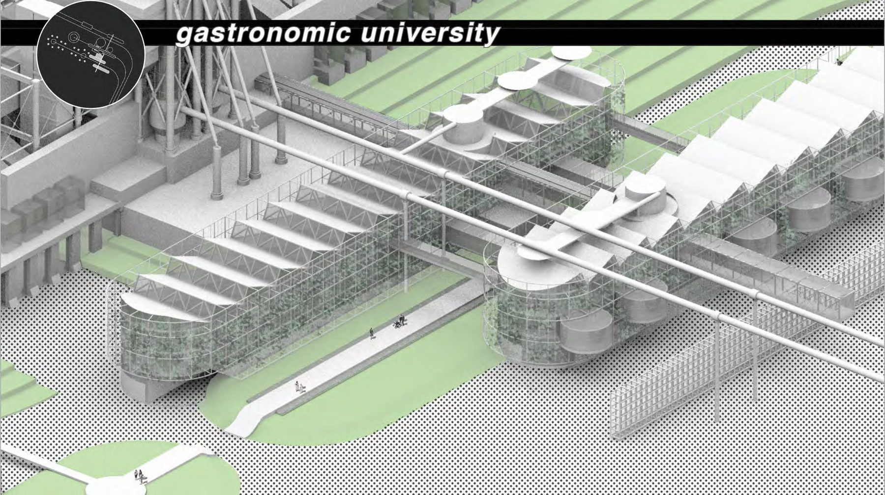
- Type
- Fourth-year studio, Winter/Spring 2020
- Location
- Western outskirts of Florence
- School
- California Polytechnic State University, San Luis Obispo, CSU International Program, Florence
- Professor
- Paola Giaconia
- Team
- Katherine Young, Scott L'Esperance, Ben Wills
What happens to large abandoned buildings on the edge of the city, and to farming, as robots become part of it?
The project reuses a large abandoned building outside Florence's historic centre as an agritourism site, combining architecture, landscape and agriculture. It is designed to show the public how people and robots increasingly work together in farming.
Process
The team developed the site plan and concept together, then each member designed their own programme spaces to work as one whole.
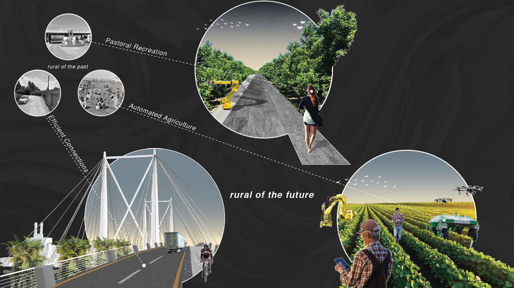
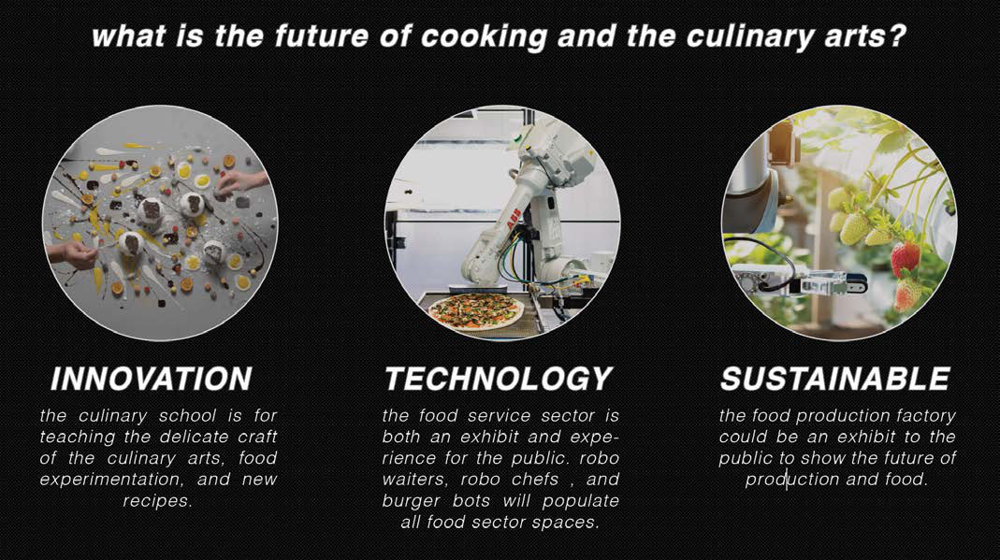
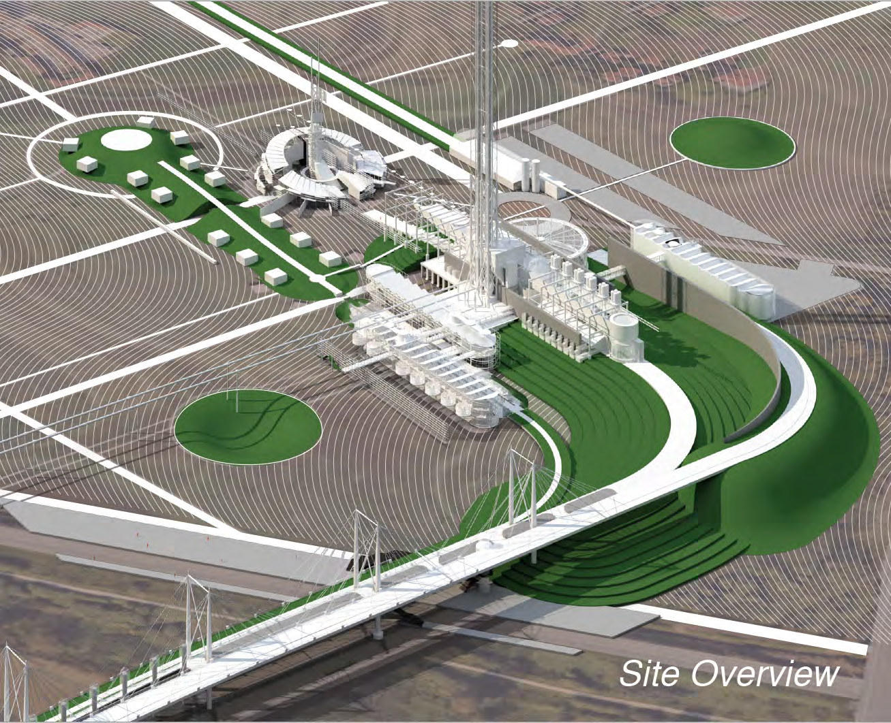
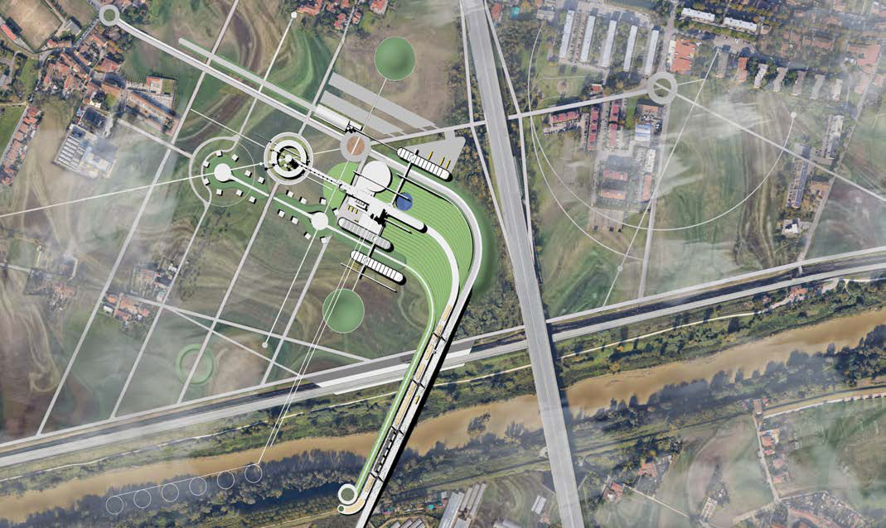
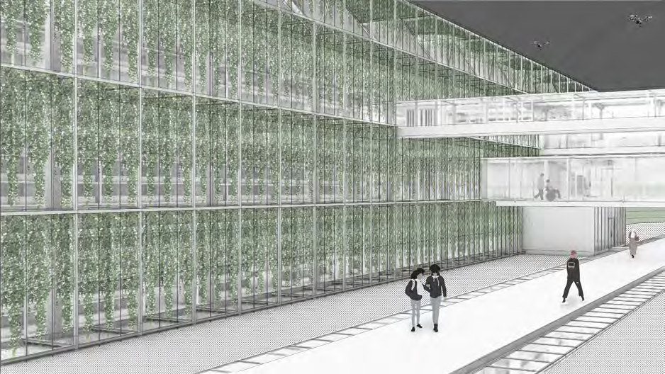
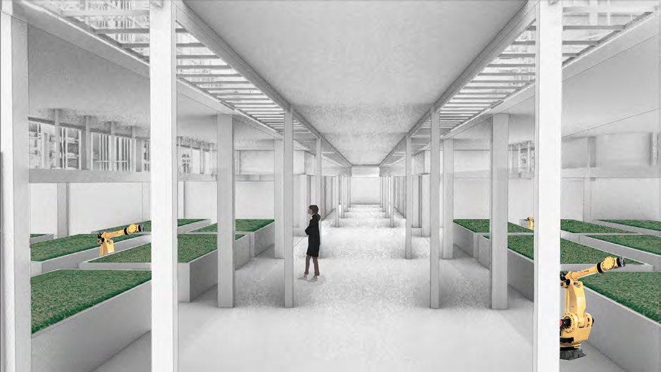
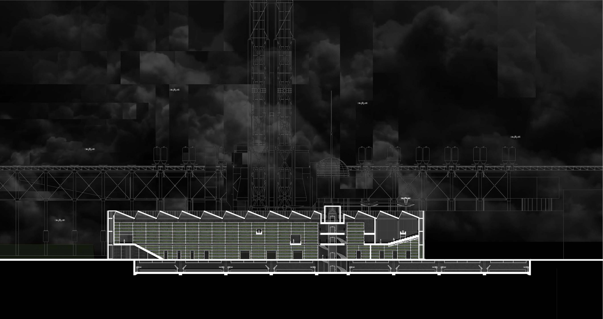
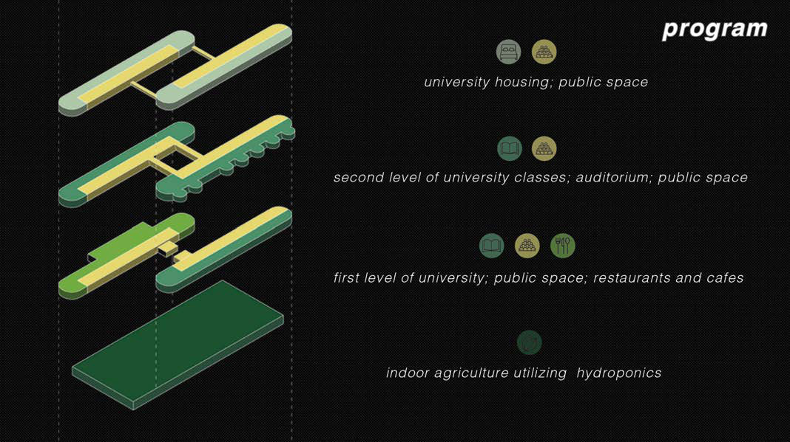
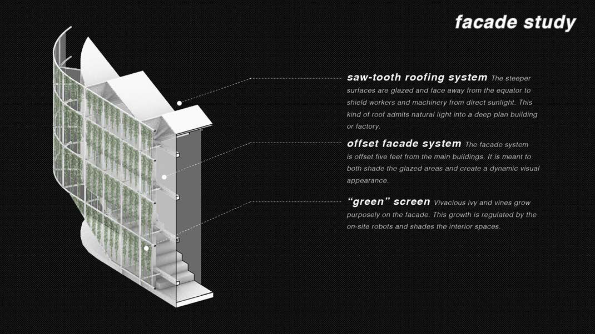
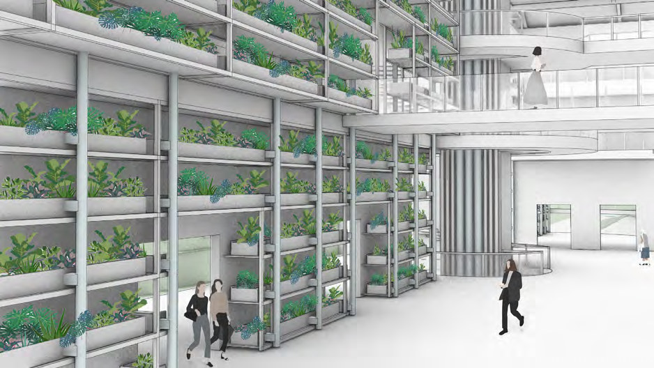
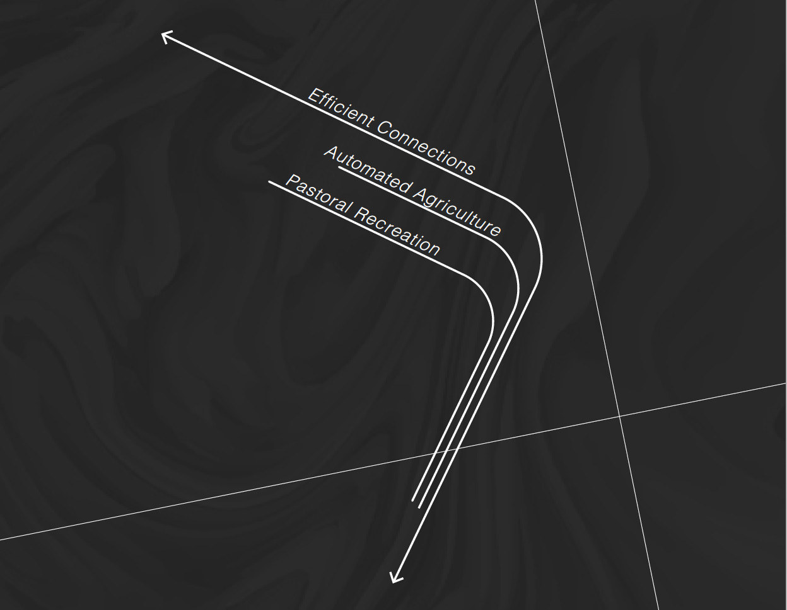
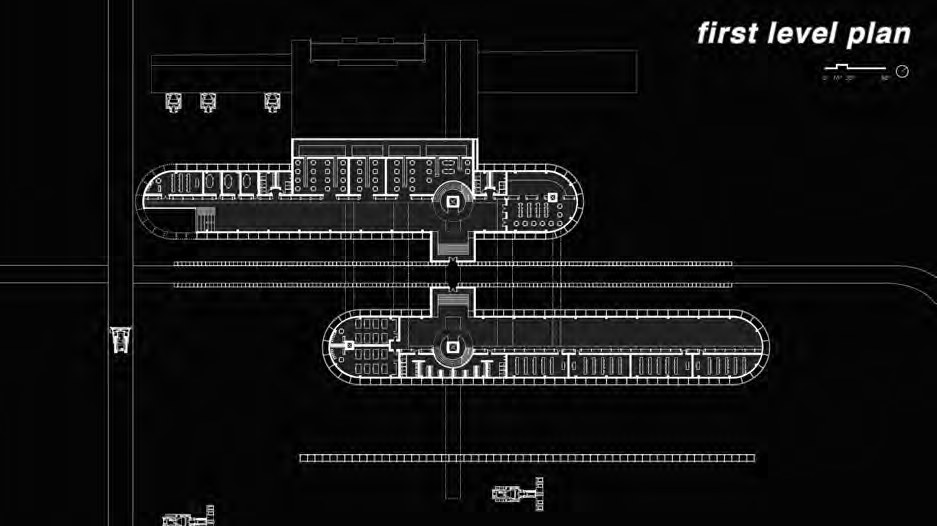
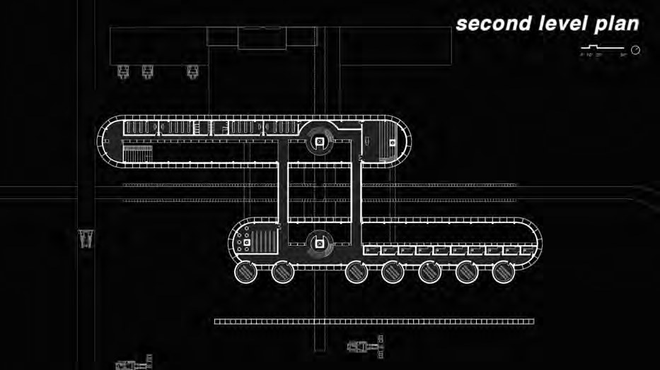
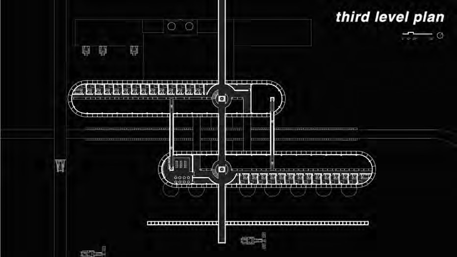